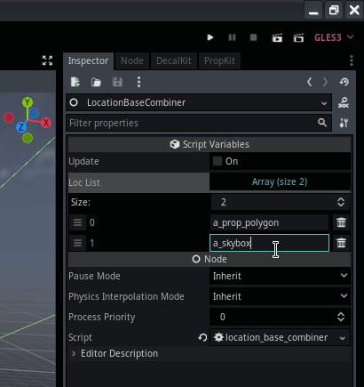

Module: location_base_combiner
Documentation last edited: October 23, 2025 at 14:33 UTC
Description
Не рекомендуется использовать эту функцию, потому что она не завершена, не протестирована и имеет подтверждённые проблемы. Её разработка была прекращена, потому что её использование оказалось недостаточно целесообразным. В целом предпочтение было отдано множеству небольших локаций, оптимизированных под экраны загрузки.
Стоит упомянуть, что Godot буквально ломается, когда локации становятся слишком большими. Один из недостатков идеи этой системы связан с этим фактом. Экспериментальная m_day1_x провалилась из-за общего количества сомнительных поведений/багов и необъяснимых вылетов, которые произошли во время тестирования тремя игроками.
Пожалуйста, не делай свои локации слишком большими с точки зрения общего размера или общего количества узлов, чтобы избежать проблем.
Стоит упомянуть, что Godot буквально ломается, когда локации становятся слишком большими. Один из недостатков идеи этой системы связан с этим фактом. Экспериментальная m_day1_x провалилась из-за общего количества сомнительных поведений/багов и необъяснимых вылетов, которые произошли во время тестирования тремя игроками.
Пожалуйста, не делай свои локации слишком большими с точки зрения общего размера или общего количества узлов, чтобы избежать проблем.
Location Base Combiner — это система, которая объединяет несколько локаций в одну "непрерывную" локацию. Она обрабатывает сшивание уровней, настройку окружения и управление объединёнными локациями во время выполнения. Её основная цель — свести к минимуму экраны загрузки между локациями, расходуя при этом больше оперативной памяти и видеопамяти.
Как использовать это в локации
- Создай новую локацию для этого или используй существующую - решать тебе
- Создай узел
LocationBaseCombiner
- Добавь локации, которые хочешь объединить, в список

- Нажми кнопку
Update
Это разрушительная операция. Она удалит все узлы в сцене и заменит их своей собственной настройкой. Ты предупреждён.

- Увидь объединённые локации :)

Как это действительно работает?
Она по сути добавляет все упомянутые локации в одну. Она переписывает некоторые из событий локации, чтобы разрешить потенциальные конфликты, для получения этой информации константа
LOC_UNIQUE_VARS
используется в узлах, которые обрабатываются в
LocationBaseCombinerPart
.
Она не удаляет экраны загрузки completely
, но
делает их куда быстрее
. К сожалению, это происходит
в обмен на более длинный стартовый экран загрузки
. Практически это позволяет переключаться между "объединёнными" локациями быстрее, и если ты переключаешься на локацию, которая не объединена в эту — она полностью заменит всю локацию.
General Information
Root directories list
docs, src
Nodes
LocationBaseCombinerPart
LocationBaseCombiner
Classes
None
Resources
None
Other Scripts
None